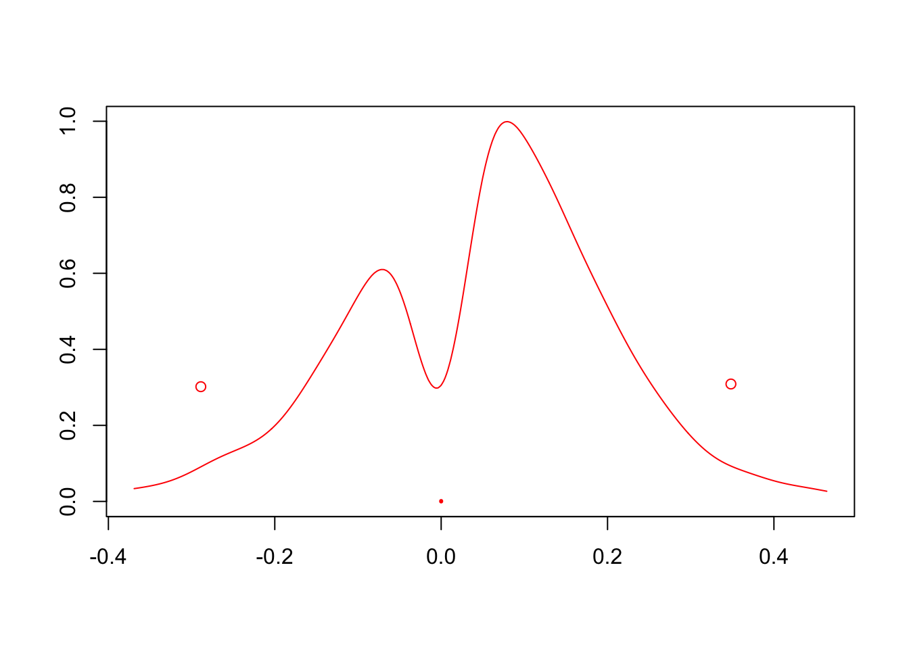
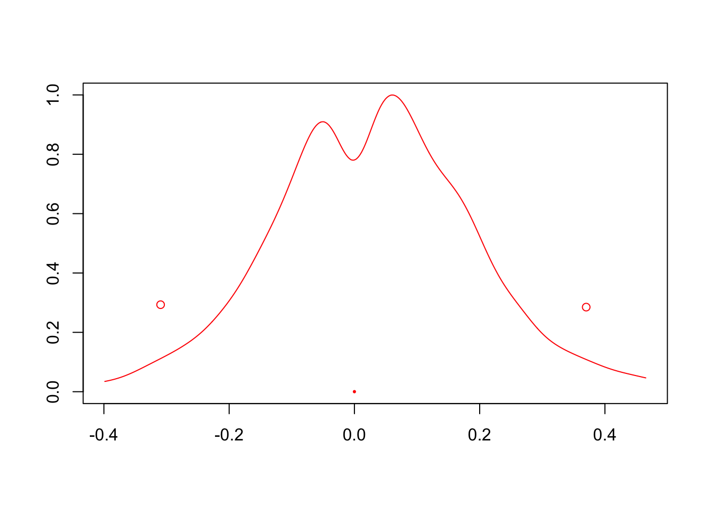
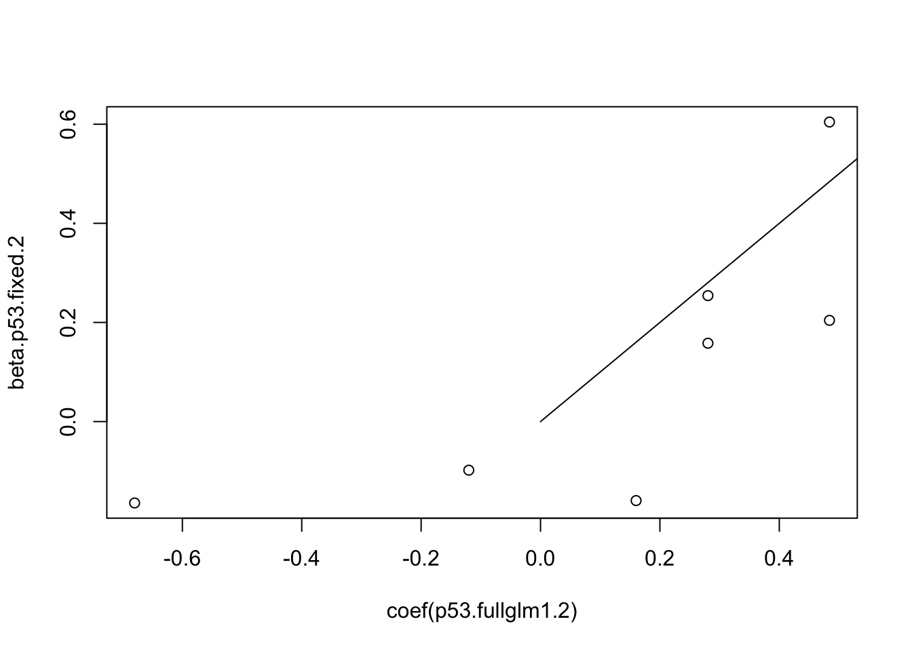

Chapter 5 Hierarchical Model Simulation
This simulation generates data from a hierarchical logistic model as follows: If there is a true association, \(\mu\) is a (fixed) nonzero value and \(\beta_j \sim N(\mu, \sigma^2)\) where \(\sigma^2\) is fixed. Otherwise, \(\mu=\beta_j = 0, \forall j\). The observed data \(Y_{ij}\) is binary, and has \(P(Y_{ij}| \beta_j) = \frac{e^{\beta_j}}{1+e^{\beta_j}}\). The \(j\) index corresponds to the “group” to which the observation belongs.
knitr::opts_chunk$set(echo = TRUE)
knitr::opts_chunk$set(cache = TRUE)
library("R2jags")Loading required package: rjagsLoading required package: codaLinked to JAGS 4.2.0Loaded modules: basemod,bugs
Attaching package: 'R2jags'The following object is masked from 'package:coda':
traceplotset.seed(1)
epsilon=.01
#fix everything (even betas)
mu.p53=.5
phi.p53= 10
observations=1000
n.sites=7
beta.p53.fixed = rnorm(n.sites,mu.p53,phi.p53^(-.5)) #"fixed" because seed
beta.p53.fixed.1 <-beta.p53.fixed
Y <-site <- rep(NA, observations*n.sites)
for(i in 1:n.sites){
Y[((i-1)*observations+1):(i*observations)]<-rbinom(observations, 1, exp(beta.p53.fixed[i])/(1+exp(beta.p53.fixed[i])))
site[((i-1)*observations+1):(i*observations)]<- rep(i, observations)
}
sim.data1.1<-list(CaseCon=Y, site=site, J=n.sites*observations ,n.sites=n.sites)
Y <-site <- rep(NA, observations*n.sites)
for(i in 1:n.sites){
Y[((i-1)*observations+1):(i*observations)]<-rbinom(observations, 1,.5) #beta=0
site[((i-1)*observations+1):(i*observations)]<- rep(i, observations)
}
sim.data1.0<-list(CaseCon=Y, site=site, J=n.sites*observations ,n.sites=n.sites)
#this might just be 0?
set.seed(1)
mu.p53=.1
phi.p53= 10
observations=100
n.sites=7
beta.p53.fixed = rnorm(n.sites,mu.p53,phi.p53^(-.5)) #"fixed" because seed
beta.p53.fixed.2 <-beta.p53.fixed
Y <-site <- rep(NA, observations*n.sites)
for(i in 1:n.sites){
Y[((i-1)*observations+1):(i*observations)]<-rbinom(observations, 1, exp(beta.p53.fixed[i])/(1+exp(beta.p53.fixed[i])))
site[((i-1)*observations+1):(i*observations)]<- rep(i, observations)
}
sim.data1.2<-list(CaseCon=Y, site=site, J=n.sites*observations ,n.sites=n.sites)
source("HPD.R")
#############Since there is uncertainty regarding whether or not there is a true association, this can be modeled as a probability \(\xi\) with a beta prior. Then an inverse gamma prior is chosen for variance \(\sigma^2\) and a spike and slab prior conditioning on the probability of association for \(mu\): \(\pi(\mu|\xi) = (1-\xi ) \delta_0(\mu)+ \xi\phi(\mu)\).
There are a couple of changes that can be made in the model implementation to to obtain MCMC samples:
The point mass can be approximated using a very concentrated normal distribution, centered at 0. Thus, \(\pi(\mu|\xi) = (1-\xi) N(\mu, 0, \epsilon)+ \xi N(\mu,0 ,1)\).
The probability \(\xi\) can give rise to a latent variable drawn from a bernoulli, which is then used to parametrize the distribution of \(\mu\). That is, \(\pi(\mu|\iota) = (1-\iota ) N(\mu, 0, \epsilon)+ \iota N(\mu,0 ,1)\), and \(P(\iota = 1 ) = \xi\).
However, due to the sequential nature of MCMC sampling, these seemingly identical models produce different results.
Models that do not use the latent variable must specify the mixture distribution in JAGS directly. This is done through the zeroes and ones trick, which use properties of the Poisson and Bernoulli distributions in order to allow for arbitrary distributions.
In these scenarios, the model from which a sample comes from is also not evident. To determine whether a small value is truly from the concentrated normal, we can compute the probability of the sample for the two distributions and choose the model that results in a larger one.
not sure how relevant this is, maybe will remove different implementations once things work out
#model
p53.test.ind = function() {
for (j in 1:J) {
CaseCon[j] ~ dbern(theta[j])
logit(theta[j]) <- beta.p53[site[j]] }
for (l in 1:n.sites) {
beta.p53.1[l] ~ dnorm(mu.p53, phi.p53)
beta.p53[l] <- beta.p53.1[l]*(mu.p53.notzero)
}
#zeroes trick
C<-1000
epsilon<-0.01
tau<- pow(epsilon,-2)
#if mu geq 0 and mu leq 0, prior is from point mass
#mu in (-epsilon, epsilon)
mu.p53.notzero<- step(abs(mu.p53)-epsilon) #LR and then decide
L<- (1-mu.p53.notzero)*(1-pind)+ #(dnorm(mu.p53,0,tau)*(1-pind))+ #
(dnorm(mu.p53,0,1)*pind)
#need pind for mixing
phi<- -log(L)+C
zero~dpois(phi)
mu.p53 ~ dunif(-10,10) #not sure how big this interval should be, just picked one large enough for .1 sd, started at 10, but even 1 has too large jumps
phi.p53 ~ dgamma(1, .05)
# phi.p53 ~ dgamma(2, .02)
sigma.p53 <- pow(phi.p53, -.5)
#assoc~dbern(pind)
pind ~ dbeta(.5,.5)
}
p53.test.approx= function() {
for (j in 1:J) {
CaseCon[j] ~ dbern(theta[j])
logit(theta[j]) <- beta.p53[site[j]] }
for (l in 1:n.sites) {
beta.p53.1[l] ~ dnorm(mu.p53, phi.p53)
beta.p53[l] <- beta.p53.1[l]*(mu.p53.notzero)
}
#zeroes trick
C<-1000
epsilon<-0.01
tau<- pow(epsilon,-2)
#if mu geq 0 and mu leq 0, prior is from point mass
#is not zero if prob is greater
mu.p53.notzero<- step(temp) #should come from this?
temp<-dnorm(mu.p53,0,1)-dnorm(mu.p53,0,tau)
L<- (dnorm(mu.p53,0,tau)*(1-pind))+ #(1- mu.p53.notzero)*(1-pind)+ #
(dnorm(mu.p53,0,1)*pind)
#need pind for mixing
phi<- -log(L)+C
zero~dpois(phi)
mu.p53 ~ dunif(-10,10) #not sure how big this interval should be, just picked one large enough for .1 sd, started at 10, but even 1 has too large jumps
phi.p53 ~ dgamma(1, .05)
# phi.p53 ~ dgamma(2, .02)
sigma.p53 <- pow(phi.p53, -.5)
#assoc~dbern(pind)
pind ~ dbeta(.5,.5)
}
p53.test.latent= function() {
for (j in 1:J) {
CaseCon[j] ~ dbern(theta[j])
logit(theta[j]) <- beta.p53[site[j]] }
for (l in 1:n.sites) {
beta.p53.1[l] ~ dnorm(mu.p53, phi.p53)
beta.p53[l] <- beta.p53.1[l]*(mu.p53.notzero)
}
#zeroes trick
C<-1000
epsilon<-0.01
tau<- pow(epsilon,-2)
#if mu geq 0 and mu leq 0, prior is from point mass
#is not zero if prob is greater
mu.p53.notzero<- assoc
temp<-dnorm(mu.p53,0,1)-dnorm(mu.p53,0,tau)
#L<- (dnorm(mu.p53,0,tau)^(1-assoc))*(dnorm(mu.p53,0,1)^(assoc))
#need pind for mixing
#phi<- -log(L)+C
#zero~dpois(phi)
#mu.p53 ~ dunif(-10,10) #not sure how big this interval should be, just picked one large enough for .1 sd, started at 10, but even 1 has too large jumps
mu.p53<- mu1.p53*assoc
mu1.p53 ~ dnorm(0,1)
phi.p53 ~ dgamma(1, .05)
# phi.p53 ~ dgamma(2, .02)
sigma.p53 <- pow(phi.p53, -.5)
assoc~dbern(pind)
pind ~ dbeta(.5,.5)
}p53.fulljags1.0.a = jags(data=sim.data1.0, ####this
inits=NULL, parameters.to.save =c("pind", "mu.p53", "phi.p53","mu.p53.notzero","temp"),
model = p53.test.approx)module glm loadedCompiling model graph
Resolving undeclared variables
Allocating nodes
Graph information:
Observed stochastic nodes: 7000
Unobserved stochastic nodes: 11
Total graph size: 14076
Initializing model#par(mar=rep(1,4))
#plot(as.mcmc(p53.fulljags1.0.a))
HPDM(p53.fulljags1.0.a$BUGSoutput$sims.list$mu.p53, e=epsilon)
Potentially multimodal column vectors:
1
Column 1 multimodal intervals: (-0.036,0.041) 
Lower Upper
[1,] -0.03566506 0.0405582mean(p53.fulljags1.0.a$BUGSoutput$sims.list$mu.p53)[1] 0.001147017median(p53.fulljags1.0.a$BUGSoutput$sims.list$mu.p53)[1] 0.001183041p53.fulljags1.0.i = jags(data=sim.data1.0, ####this
inits=NULL, parameters.to.save =c("pind", "mu.p53", "phi.p53","mu.p53.notzero"),
model = p53.test.ind)Compiling model graph
Resolving undeclared variables
Allocating nodes
Graph information:
Observed stochastic nodes: 7000
Unobserved stochastic nodes: 11
Total graph size: 14068
Initializing model#par(mar=rep(1,4))
#plot(as.mcmc(p53.fulljags1.0.i))
HPDM(p53.fulljags1.0.i$BUGSoutput$sims.list$mu.p53, e=epsilon)
Potentially multimodal column vectors:
1
Column 1 multimodal intervals: (-0.08,-0.016) (-0.01,0.01) 
Lower Upper
[1,] -0.07958173 -0.01596594 -0.009995439 0.009995481mean(p53.fulljags1.0.i$BUGSoutput$sims.list$mu.p53)[1] -0.002581946median(p53.fulljags1.0.i$BUGSoutput$sims.list$mu.p53)[1] -0.0003995983plotvar(p53.fulljags1.0.a$BUGSoutput$sims.list$mu.p53,e=epsilon)
plotvar(p53.fulljags1.0.i$BUGSoutput$sims.list$mu.p53,e=epsilon,newplot=FALSE)
#glm
p53.fullglm1.0 = glm(CaseCon ~ factor(site), data=sim.data1.0, ####also this
family=binomial, x=T)
coef(p53.fullglm1.0) (Intercept) factor(site)2 factor(site)3 factor(site)4 factor(site)5
-0.10810516 0.11210517 0.07610243 0.21219905 0.02405572
factor(site)6 factor(site)7
0.07610243 0.12810583 confint(p53.fullglm1.0)Waiting for profiling to be done... 2.5 % 97.5 %
(Intercept) -0.23242434 0.01593609
factor(site)2 -0.06328383 0.28763842
factor(site)3 -0.09932072 0.25162370
factor(site)4 0.03675574 0.38791507
factor(site)5 -0.15146721 0.19960978
factor(site)6 -0.09932072 0.25162370
factor(site)7 -0.04727711 0.30365352p53.fullglm1.0.simple = glm(CaseCon ~ 1, data=sim.data1.0, ####also this
family=binomial, x=T)
coef(p53.fullglm1.0.simple)(Intercept)
-0.01828622 Overall the Bayesian and frequentist results on this (nonassociated) dataset are very similar. Using a parameter vs an index does produce significantly different results at this stage. Even while using the same prior for pind, the index-based model has a greater amount of “0”s. However, this does not change the posterior of pind (\(\xi\)). On the other hand, the normal approx at least shifts it towards 0 (which is what we expect).
p53.fulljags1.1.a = jags(data=sim.data1.1, ####this
inits=NULL, parameters.to.save =c("pind", "mu.p53", "phi.p53","mu.p53.notzero"),
model = p53.test.approx)Compiling model graph
Resolving undeclared variables
Allocating nodes
Graph information:
Observed stochastic nodes: 7000
Unobserved stochastic nodes: 11
Total graph size: 14076
Initializing model#par(mar=rep(1,4))
#plot(as.mcmc(p53.fulljags1.1.a))
HPDM(p53.fulljags1.1.a$BUGSoutput$sims.list$mu.p53, e=epsilon) Lower Upper
[1,] 0.2814818 0.6950824mean(p53.fulljags1.1.a$BUGSoutput$sims.list$mu.p53)[1] 0.4837337median(p53.fulljags1.1.a$BUGSoutput$sims.list$mu.p53)[1] 0.4825983p53.fulljags1.1.i = jags(data=sim.data1.1, ####this
inits=NULL, parameters.to.save =c("pind", "mu.p53", "phi.p53","mu.p53.notzero"),
model = p53.test.ind)Compiling model graph
Resolving undeclared variables
Allocating nodes
Graph information:
Observed stochastic nodes: 7000
Unobserved stochastic nodes: 11
Total graph size: 14068
Initializing model#par(mar=rep(1,4))
#plot(as.mcmc(p53.fulljags1.1.i))
HPDM(p53.fulljags1.1.i$BUGSoutput$sims.list$mu.p53, e=epsilon) Lower Upper
[1,] 0.3022243 0.7036912mean(p53.fulljags1.1.i$BUGSoutput$sims.list$mu.p53)[1] 0.4848036median(p53.fulljags1.1.i$BUGSoutput$sims.list$mu.p53)[1] 0.4826411#glm
p53.fullglm1.1 = glm(CaseCon ~ factor(site), data=sim.data1.1, ####also this
family=binomial, x=T)
summary(p53.fullglm1.1)
Call:
glm(formula = CaseCon ~ factor(site), family = binomial, data = sim.data1.1,
x = T)
Deviance Residuals:
Min 1Q Median 3Q Max
-1.5735 -1.3263 0.9464 0.9563 1.1068
Coefficients:
Estimate Std. Error z value Pr(>|z|)
(Intercept) 0.34333 0.06418 5.350 8.82e-08 ***
factor(site)2 0.22769 0.09195 2.476 0.0133 *
factor(site)3 -0.03286 0.09064 -0.363 0.7169
factor(site)4 0.55205 0.09474 5.827 5.64e-09 ***
factor(site)5 0.21903 0.09189 2.384 0.0171 *
factor(site)6 -0.17494 0.09026 -1.938 0.0526 .
factor(site)7 0.20178 0.09178 2.198 0.0279 *
---
Signif. codes: 0 '***' 0.001 '**' 0.01 '*' 0.05 '.' 0.1 ' ' 1
(Dispersion parameter for binomial family taken to be 1)
Null deviance: 9313.4 on 6999 degrees of freedom
Residual deviance: 9236.2 on 6993 degrees of freedom
AIC: 9250.2
Number of Fisher Scoring iterations: 4p53.fullglm1.1.simple = glm(CaseCon ~ 1, data=sim.data1.1, ####also this
family=binomial, x=T)
plot(coef(p53.fullglm1.1), beta.p53.fixed.1)
lines(c(0,1),c(0,1))
Using \(\mu=0.5\), the posterior results match the intercept. The MCMC dod not select mu = 0 at any point, but this only indicates that the data overwhelms the prior.
p53.fulljags1.2.a = jags(data=sim.data1.2, ####this
inits=NULL, parameters.to.save =c("pind", "mu.p53", "phi.p53","mu.p53.notzero", "temp"),
model = p53.test.approx)Compiling model graph
Resolving undeclared variables
Allocating nodes
Graph information:
Observed stochastic nodes: 700
Unobserved stochastic nodes: 11
Total graph size: 1476
Initializing model#par(mar=rep(1,4))
#plot(as.mcmc(p53.fulljags1.2.a))
HPDM(p53.fulljags1.2.a$BUGSoutput$sims.list$mu.p53, e=epsilon)
Potentially multimodal column vectors:
1
Column 1 multimodal intervals: (-0.289,-0.016) (0.013,0.348) 
Lower Upper
[1,] -0.2888934 -0.01643942 0.01344605 0.3483093mean(p53.fulljags1.2.a$BUGSoutput$sims.list$mu.p53)[1] 0.04721087median(p53.fulljags1.2.a$BUGSoutput$sims.list$mu.p53)[1] 0.06882402p53.fulljags1.2.i = jags(data=sim.data1.2, ####this
inits=NULL, parameters.to.save =c("pind", "mu.p53", "phi.p53","mu.p53.notzero"),
model = p53.test.ind)Compiling model graph
Resolving undeclared variables
Allocating nodes
Graph information:
Observed stochastic nodes: 700
Unobserved stochastic nodes: 11
Total graph size: 1468
Initializing model#par(mar=rep(1,4))
#plot(as.mcmc(p53.fulljags1.2.i))
HPDM(p53.fulljags1.2.i$BUGSoutput$sims.list$mu.p53, e=epsilon)
Potentially multimodal column vectors:
1
Column 1 multimodal intervals: (-0.309,-0.01) (0.01,0.37) 
Lower Upper
[1,] -0.3094696 -0.01022024 0.01006981 0.3700762mean(p53.fulljags1.2.i$BUGSoutput$sims.list$mu.p53)[1] 0.03330651median(p53.fulljags1.2.i$BUGSoutput$sims.list$mu.p53)[1] 0.03619337#glm
p53.fullglm1.2 = glm(CaseCon ~ factor(site), data=sim.data1.2, ####also this
family=binomial, x=T)
summary(p53.fullglm1.2)
Call:
glm(formula = CaseCon ~ factor(site), family = binomial, data = sim.data1.2,
x = T)
Deviance Residuals:
Min 1Q Median 3Q Max
-1.335 -1.194 1.027 1.110 1.530
Coefficients:
Estimate Std. Error z value Pr(>|z|)
(Intercept) -0.1201 0.2004 -0.600 0.5487
factor(site)2 0.2805 0.2836 0.989 0.3226
factor(site)3 -0.6800 0.2948 -2.307 0.0211 *
factor(site)4 0.4841 0.2855 1.696 0.0899 .
factor(site)5 0.4841 0.2855 1.696 0.0899 .
factor(site)6 0.1601 0.2831 0.566 0.5716
factor(site)7 0.2805 0.2836 0.989 0.3226
---
Signif. codes: 0 '***' 0.001 '**' 0.01 '*' 0.05 '.' 0.1 ' ' 1
(Dispersion parameter for binomial family taken to be 1)
Null deviance: 970.26 on 699 degrees of freedom
Residual deviance: 947.40 on 693 degrees of freedom
AIC: 961.4
Number of Fisher Scoring iterations: 4p53.fullglm1.2.simple = glm(CaseCon ~ 1, data=sim.data1.2, ####also this
family=binomial, x=T)
plot(coef(p53.fullglm1.2), beta.p53.fixed.2)
lines(c(0,1),c(0,1)) For this \(\mu= 0.1\), the posterior appears to be in conflict with expected behavior. However, upon observing the GLM coefficients we can see that the true \(\beta_j\)’s were quite dispersed, and that the frequentist and bayesian methods agree in expressing that there is a nonzero effect, but it can positive or negative.
p53.fulljags1.0.l = jags(data=sim.data1.0, ####this
inits=NULL, parameters.to.save =c("pind", "mu.p53", "phi.p53","mu.p53.notzero","temp","assoc","mu1.p53"),
model = p53.test.latent)Compiling model graph
Resolving undeclared variables
Allocating nodes
Graph information:
Observed stochastic nodes: 7000
Unobserved stochastic nodes: 11
Total graph size: 14056
Initializing model#par(mar=rep(1,4))
#plot(as.mcmc(p53.fulljags1.0.l))
HPDM(p53.fulljags1.0.l$BUGSoutput$sims.list$mu.p53, e=epsilon) Lower Upper
[1,] 0 0mean(p53.fulljags1.0.l$BUGSoutput$sims.list$mu.p53)[1] 0median(p53.fulljags1.0.l$BUGSoutput$sims.list$mu.p53)[1] 0#ones trick?
p53.test.latent.1= function() {
for (j in 1:J) {
CaseCon[j] ~ dbern(theta[j])
logit(theta[j]) <- beta.p53[site[j]] }
for (l in 1:n.sites) {
beta.p53.1[l] ~ dnorm(mu.p53, phi.p53)
beta.p53[l] <- beta.p53.1[l]*(mu.p53.notzero)
}
#zeroes trick
C<-1e6
epsilon<-0.01
tau<- pow(epsilon,-2)
#if mu geq 0 and mu leq 0, prior is from point mass
#is not zero if prob is greater
mu.p53.notzero<- step(temp)
temp<-dnorm(mu.p53,0,1)-dnorm(mu.p53,0,tau) #CHANGED precision to 1/4
L<-(dnorm(mu.p53,0,tau)*(1-pind))+ #(1- mu.p53.notzero)*(1-pind)+ #
(dnorm(mu.p53,0,1)*pind)
p <- L/ C
for(i in 1:n.ones){
ones[i] ~ dbern(p)
}
mu.p53 ~ dunif(-10,10) #not sure how big this interval should be, just picked one large enough for .1 sd, started at 10, but even 1 has too large jumps
#mu.p53<- mu1.p53*assoc
#mu1.p53 ~ dnorm(0,1)
phi.p53 ~ dgamma(1, .05)
# phi.p53 ~ dgamma(2, .02)
sigma.p53 <- pow(phi.p53, -.5)
#assoc~dbern(pind)
pind ~ dbeta(.5,.5)
}
n.ones=1
onesdata<- sim.data1.0
onesdata$ones<- rep(1,n.ones) #same
onesdata$n.ones<- n.ones
p53.fulljags1.0.l1 = jags(data=onesdata, ####this
inits=NULL, parameters.to.save =c("pind", "mu.p53", "phi.p53","mu.p53.notzero","temp"),
model = p53.test.latent.1)Compiling model graph
Resolving undeclared variables
Allocating nodes
Graph information:
Observed stochastic nodes: 7001
Unobserved stochastic nodes: 10
Total graph size: 14075
Initializing model#par(mar=rep(1,4))
#plot(as.mcmc(p53.fulljags1.0.l1))
HPDM(p53.fulljags1.0.l$BUGSoutput$sims.list$mu.p53, e=epsilon) Lower Upper
[1,] 0 0mean(p53.fulljags1.0.l$BUGSoutput$sims.list$mu.p53)[1] 0median(p53.fulljags1.0.l$BUGSoutput$sims.list$mu.p53)[1] 0Ones trick is still a little problematic, especially in trace of mu
p53.fulljags1.1.l = jags(data=sim.data1.1, ####this
inits=NULL, parameters.to.save =c("pind", "mu.p53", "phi.p53","mu.p53.notzero","temp","assoc","mu1.p53"),
model = p53.test.latent)Compiling model graph
Resolving undeclared variables
Allocating nodes
Graph information:
Observed stochastic nodes: 7000
Unobserved stochastic nodes: 11
Total graph size: 14056
Initializing model#par(mar=rep(1,4))
#plot(as.mcmc(p53.fulljags1.1.l))
HPDM(p53.fulljags1.1.l$BUGSoutput$sims.list$mu.p53, e=epsilon) Lower Upper
[1,] 0.2759939 0.6766949mean(p53.fulljags1.1.l$BUGSoutput$sims.list$mu.p53)[1] 0.4783651median(p53.fulljags1.1.l$BUGSoutput$sims.list$mu.p53)[1] 0.4795407p53.fulljags1.2.l = jags(data=sim.data1.2, ####this
inits=NULL, parameters.to.save =c("pind", "mu.p53", "phi.p53","mu.p53.notzero","temp","assoc","mu1.p53"),
model = p53.test.latent)Compiling model graph
Resolving undeclared variables
Allocating nodes
Graph information:
Observed stochastic nodes: 700
Unobserved stochastic nodes: 11
Total graph size: 1456
Initializing model#par(mar=rep(1,4))
#plot(as.mcmc(p53.fulljags1.2.l))
HPDM(p53.fulljags1.2.l$BUGSoutput$sims.list$mu.p53, e=epsilon)
Potentially multimodal column vectors:
1
Column 1 multimodal intervals: (-0.262,0.305) 
Lower Upper
[1,] -0.262373 0.3048219mean(p53.fulljags1.2.l$BUGSoutput$sims.list$mu.p53)[1] 0.02193662median(p53.fulljags1.2.l$BUGSoutput$sims.list$mu.p53)[1] 0#precision=4
onesdata<- sim.data1.2
onesdata$n.ones<-1
onesdata$ones<- rep(1, onesdata$n.ones)
p53.fulljags1.2.l1 = jags(data=onesdata, ####this
inits=NULL, parameters.to.save =c("pind", "mu.p53", "phi.p53","mu.p53.notzero","temp"),
model = p53.test.latent.1)Compiling model graph
Resolving undeclared variables
Allocating nodes
Graph information:
Observed stochastic nodes: 701
Unobserved stochastic nodes: 10
Total graph size: 1475
Initializing model#par(mar=rep(1,4))
#plot(as.mcmc(p53.fulljags1.2.l1))#with precision = .25
p53.fulljags1.2.l2 = jags(data=onesdata, ####this
inits=NULL, parameters.to.save =c("pind", "mu.p53", "phi.p53","mu.p53.notzero","temp"),
model = p53.test.latent.1)Compiling model graph
Resolving undeclared variables
Allocating nodes
Graph information:
Observed stochastic nodes: 701
Unobserved stochastic nodes: 10
Total graph size: 1475
Initializing model#par(mar=rep(1,4))
#plot(as.mcmc(p53.fulljags1.2.l2))This last simulation is an example of Bartlett’s paradox: the nonzero part of the prior is too diffuse, and so the zero component ends up being favored.